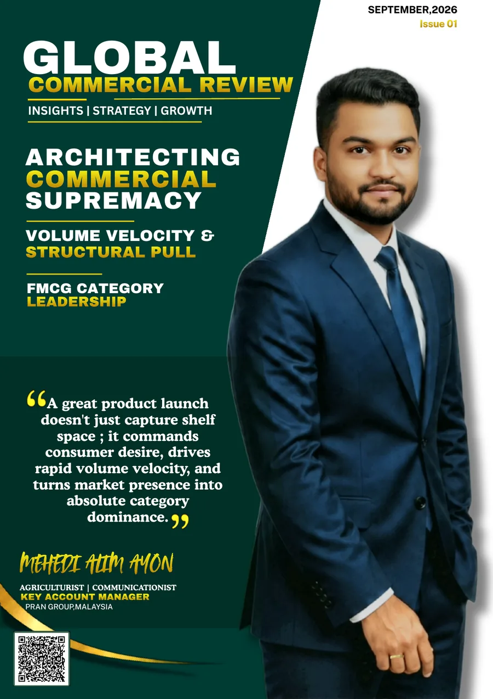

FRAMEWORK 01 · SEPTEMBER 2026
Architecting Commercial Supremacy
A practical commercial framework showing how distribution and visibility can be converted into consumer pull, volume velocity, repeat purchase and sustainable category leadership.
EXPLORE FRAMEWORK